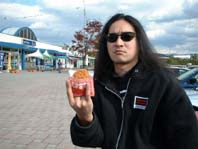

2002.11.２ 難波ロケッツ
RAGING FURY 20ｔｈ Anniversary「STORM of RIOT BLOW」
出演：11月1日（金）出演：ＲＡＧＩＮＧ ＦＵＲＹ・ＵＮＩＴＥＤ
ＳＯＬＩＴＵＤＥ・ＮＥＧＡＲＯＢＯ・ＫＩＮＧ’Ｓ ＥＶＩＬ
11月2日（土）出演：ＲＡＧＩＮＧ ＦＵＲＹ
ＪＵＲＡＳＳＩＣ ＪＡＤＥ・ＳＡＢＢＡＴ
ＴＥＲＲＯＲ ＳＱＵＡＤ・ＣＡＴＡＰＬＥＸＹ
●ＪＵＲＡＳＳＩＣ ＪＡＤＥ’Ｓ setlists
ドク・ユメ・スペルマ
Ｐｌａｓｔｉｃ Ｗａｔｅｒ Ｍｏｔｈｅｒ
新曲3
新曲2
G.D.G
新曲5（Fighet For What？）
新曲4
くたばりやがれ
Ａｆｔｅｒ Ｋｉｌｌｉｎｇ Ｍａｍ
D-DAY～鏡よ鏡
●ALBUM of TOUR
| 2002.11.01 | 2002.11.02 | 2002.11.03 |
|
 |
●BBS comment
打ち身＆筋肉痛です（痛） 投稿者：jjcrew 投稿日：10月24日(木)18時46分55秒
皆様、御無沙汰しております。書き込みをサボって一体何をしていたかというと、卑っ腰、もとい引っ越しをしていたのであります。現在、やっと一段落しましたが、依然段ボールの壁に囲まれて生活しています。ステレオも梱包されたままなので、CD聴けないのが淋しい…。
11月は大阪ロケッツですね。久々に私も同行させていただきます。楽しみです！
カッパが・・・ 投稿者：GEORGE-JURASSIC JADE 投稿日：10月25日(金)15時27分19秒
一昨日、リハの帰りに駅の売店で、
【衝撃写真 カッパ発見】
という一面記事があり、慌てて東スポを買いました。
生存してたんですな！カッパ！笑
ちなみに生け捕りにしたら1000万円だそうです！
岩手県遠野市の小鳥瀬川で、月曜と水曜の午後４時に現われるらしいです。
そこまで判ってるなら、捕まえるのは簡単かと思います。
＞jj-crewさん
大阪ヨロシクっす！
足元一新しやしたよ！
それより、なぜ引っ越しで打ち身なのですか・・・
もうまもなくですね 投稿者：山本輝彦 投稿日：10月28日(月)21時54分21秒
大阪までもうすぐですね。約半年以上ぶりのＪＪまで。新曲てんこもりみたいですごい楽しみです。メンバーに負けないくらいハッスルします!!!
大阪 投稿者：あつ 投稿日：10月30日(水)00時26分44秒
遠征します。皆様よろしくお願いします。
新曲満載ってことは、先日の名古屋でやった曲以外に新曲があるのでしょうか。
現在、腰を痛めているため、控えめに楽しまさせていただきます。
>山本輝彦様
お久しぶりです。当日、お会いできるのを楽しみにしております。
大阪 投稿者：おさる 投稿日：10月30日(水)01時42分36秒
いいなぁ、正直うらやましい。テラーも見たいなぁ。
でも大阪に行けない分、関東組(？)は
来月の渋谷で楽しませてもらいます。
大阪行きますよー！ 投稿者：jjcrew 投稿日：10月30日(水)08時45分53秒
久々の大阪でございます。色んなハコでお手伝いしていますが、何故か大阪は「濃い」思い出ばかりです。何か強力な磁場があるような…今回も、記憶の中に濃い1ページとなって刻まれるよう、気合を入れて参戦したいと思うjjcrewです。
＞GEORGE様
ヨロシクお願いします！足元回り、さっそくチェックさせていただきやす！
打ち身は、なぜか作業が終わったら腕にアザができてたのです。
無意識にやっちゃったようです。恐竜並の神経なのか、俺は！？
GEORGEさんの河童に関する書き込みを見て、その昔、キオスクで目に止まったスポーツ新聞の「宇宙人の写真」に心を打ち震わせていた、あるバンドのベーシストを思い出しました（笑）。
＞山本輝彦様＆あつ様
ロケッツでお会いしましょう！！！
＞おさる様
お久しぶりです。
そうです！DeSeOも負けず劣らず凄い内容なので、こちらも盛り上がって行きましょう。
今回のHAYAさんページ、良い味出してますよねー。
(無題) 投稿者：山本輝彦 投稿日：10月30日(水)20時14分47秒
＞あつさん
お久しぶりです!!やっと会えますねぇ。すごい楽しみです。
＞jjcrew様
会ってその「濃い」思い出話を聞かせて下さい。
いろんな楽しみがあって本当に大阪楽しみです。
今日夜には大阪にいるというのは不思議だ。 投稿者：NOB－JURASSIC JADE 投稿日：11月 1日(金)00時23分47秒
いきなりの冬っぽさですね。すでに初雪が・・・。
JURASSIC JADEはRAGING FURYの20周年記念ライブの二日目に出演します。
RAGING FURY 20ｔｈ Anniversary「STORM of RIOT BLOW」 ２ｄａｙｓ
ＯＰＥＮ：１７：３０ ＳＴＡＲＴ：１８：００
前売：￥２０００ 当日：￥２５００ 通し：￥３５００
１１．１（金）出演：ＲＡＧＩＮＧ ＦＵＲＹ・ＵＮＩＴＥＤ・ＳＯＬＩＴＵＤＥ・ＮＥＧＡＲＯＢＯ・ＫＩＮＧ’Ｓ ＥＶＩＬ
１１．２（土）出演：ＲＡＧＩＮＧ ＦＵＲＹ・ＪＵＲＡＳＳＩＣ ＪＡＤＥ・ＳＡＢＢＡＴ・ＴＥＲＲＯＲ ＳＱＵＡＤ・ＣＡＴＡＰＬＥＸＹ
是非！是非！見に来てください。
いつものようにマエノリしますので、今日難波ロケッツでお会いしましょう。
旅先でもチェック出きるので、書込み・メールお願いします。
＞山本 輝彦 様
お待たせしました。１月ぶりですね。新曲お聞かせします。お楽しみに！
＞あつ 様
先日は名古屋で見てくれてありがとう。新曲は残念ながら、この前と同じですが、アレンジなど常に変化してますよ。印象違う可能性もあります。
足腰ピンチの俺に負けず、大暴れ期待します。
年甲斐もなくなんて言わないで下さい。俺こそがそれなんですから・・・。
＞おさる 様
大阪来てもらいたかった・・・。
こんな時じゃなきゃ見れない、いろんな仕掛けありなんですよ。（笑）
渋谷DESEOお待ちしてます。
HAYAの釣りコーナーなんかでOKですか？写真とメモ渡されて、UPするのに３時間はかかったんじゃないかなぁ。しんどかった。喜んでくださる方がいるなら、これからも頑張ります。
おつかれ～ 投稿者：テラ大関 投稿日：11月 3日(日)11時32分52秒
＞はせちん
楽しかったっすね。オレは酔っぱらいすぎちゃったよ。またどっかで一緒にやろうね。
＞ジョージ
かっこよかったぞ～。裏ビデオ楽しみにしてるよ。ところで内田の弟はタックル出来るようになったんだっけ？
じゃ、帰り気をつけてね。
お疲れ様であります！！！！ 投稿者：きんちゃん＠ＣＡＴＡＰＬＥＸＹ 投稿日：11月 3日(日)22時57分58秒
＞ＪＵＲＡＳＳＩＣ ＪＡＤＥの皆様
大阪は本当にお疲れ様でした！
色々とご迷惑かけた所もあったと思いますが
今後とも宜しく御願い致します。
＞長谷川様
貴方の笑顔はオイラの疲れを癒してくれました。
リスペクトであります！！
＞ジョージ様
楽屋での情けない姿は申し訳ありやせん（笑）
大阪 投稿者：あつ 投稿日：11月 4日(月)00時53分23秒
お疲れ様でした。内容の濃いイベントで大満足でした。
JJのライブも、とても良かったです。ライブ中に痛めていた腰を押されてやや悪化してしまいました。でも、大丈夫です。打上げではメンバーの皆様とお話させていただきありがとうございました。また機会があればライブに行きます。メタルバーべも見たいです。
Ｄ－ＤＡＹＳ 投稿者：山本輝彦 投稿日：11月 4日(月)01時11分09秒
ＪＪの皆様おつかれさまでした!!もういつ見ても最高ですねＪＪは。新曲もめちゃくちゃかっこよかったです。やっぱりＪＪは俺の中で一番です。
＞ＮＯＢさん
ＣＤの方本当にありがとうございました。さっそく聴いてます。新譜がでるまでもちそうです。
やっぱＮＯＢさんのギターめちゃかっこいいですね。音とかヤバすぎです。
それとやっぱりＤ－ＤＡＹＳの時は本当うれしくて泣きそうになりました。また関西に来た時は絶対行きますので。あともしよければ一度京都の方にも来てください。
＞はやまさん
メタルバーべａｔＫＹＯＴＯ楽しみにしてます。
ではこれからも応援するんでがんばってください!!!
あつさん、山本さん。 投稿者：ドラムバーベ 投稿日：11月 4日(月)08時38分48秒
いや、なんも決まってないんですけど、はい。
大阪の皆さんありがとうございました！ 投稿者：GEORGE-JURASSIC JADE 投稿日：11月 4日(月)15時50分06秒
俺が加入して一年、もう馴染んできましたか？
新生JJの初お披露目(１月)が大阪だったんで、俺にとっては特別な場所なんすよ。
今回も楽しく出来てよかったです！
＞あつさん、山本輝彦さん
ありがとうございます！
新曲、早いとこ音源にしてお届けしたいです。
頑張ってびっくりさせます！
＞きんちゃん
お世話になりました！
お陰で楽しく出来ました！
堂々とやりたい事やるのがカッコイイんすよ！情けなくないデス！
＞テラ大関(黒騎士)
おう！お互い頑張ろう！
内田治男のその後は、例のビデオと共にお届けするのでお楽しみに！
ありがとう！！！ 投稿者：NOB－JURASSIC JADE 投稿日：11月 4日(月)21時38分07秒
寒くなりましたね！！
難波ロケッツでのRAGING FURY20周年記念ライブとても素晴らしいライブイヴェントでした。
スタッフも気持ち良い若者たちでしたし、参加したバンドもとても素晴らしいパフォーマンスを見せてました。そしてなにしろ客席の応援が凄かった！（ありがとう！！！）
そんな「場」に参加出来てとても嬉しいかったです。
＞テラ大関 様
お疲れ様！
ライブも良かったけど、お前とじっくり腹を割って話せたのが、俺は嬉しいよ。
GEORGEを俺たちは活かしてるだろう。そして彼は俺らをとても刺激するし、力になってくれてるよ。そう思わないか？また、共演しょう！
＞きんちゃん＠ＣＡＴＡＰＬＥＸＹ 様
お疲れ様！君らの仕切りに心から感謝します。本当に気持ちよくやらせてもらった。ありがとう。
CATAPLEXYのパフォーマンスも素晴らしいよ。東京でのライブ予定あったら、早めに知らせてください。必ず見に行きます。メンバーみんなによろしく。
＞あつ 様
「大満足」は嬉しいですね！俺も話せて嬉しかった。
これからもよろしく。そして、腰お大事に。
＞山本輝彦 様
新曲気に入ってくれたようで嬉しい。
レコーディングする頃にはもっと良くなってると思うんだ。お楽しみに。
ありがとうございました。 投稿者：HIGUCHI@RAGING FURY 投稿日：11月 4日(月)23時17分33秒
ＪＪの皆様ありがとうございました。
何故かいつもＪＪ見ると目頭が熱くなります。
その勢いを借りて頑張らせてもらいました。
このまま２５、３０周年とやって行きたいもんです！！
今後ともよろしくお願いします。
新曲良い！ 投稿者：池沢 投稿日：11月 5日(火)00時43分05秒
初めて聴く新曲のリズム展開がとってもツボでした。
SABBATは意表をついた演出でした
対抗してBLACKFIREをカヴァー返しというのはどうでしょう？
最後にハメはずしてしまいご迷惑おかけしました。この場を借りてお詫びを・・・
祝 再会！ 投稿者：ZZO 投稿日：11月 5日(火)02時00分08秒
遅ればせながら JJの皆さんまたお会いできてうれしかったです！いつ観てもほんとにJJ WORLD! 汗かきの私には病的な汗をかかせてくれました。またお会いするのを楽しみにしてます！
＞GEORGEさん ビデオ撮れてました？ それだけが気になって。。。ひかるどあろーな...
ビデオが 投稿者：あや 投稿日：11月 5日(火)06時12分13秒
ぐるぐる回ってるのは、おいらのせいです。
ごめんなさい。
おおさか 投稿者：wildcats 投稿日：11月 7日(木)22時32分27秒
遅くなりましたが大阪お疲れさまでした！久しぶりに見たような気がしました。
新曲もかっこよく、音源出るのが待ち遠しいです。
30日のライブは予定ありで参加できそうにないですが、今年最後のライブがんばってください！
(無題) 投稿者：山本輝彦 投稿日：11月 8日(金)00時17分13秒
＞ＮＯＢさん＆ＧＥＯＲＧＥさん
新曲がかなりかっこよかったので新譜楽しみにしてます。
そしてさらに俺をＪＪの虜にして下さい
信は力なり 投稿者：ゼキ 投稿日：11月10日(日)06時57分19秒
＞ジョージィィ！！
ビデオ届いた～～～！ゆっくり見させてもらいます。極秘文書はジョーカーにちゃんと渡しておくよ。ありがと～～！
今年の冬は暖冬！ 投稿者：NOB－JURASSIC JADE 投稿日：11月11日(月)00時34分39秒
この季節、なんだか切なくなりますね。えっ！老人性鬱だって・・・。そんな。黙祷 投稿者：池沢 投稿日：11月11日(月)22時52分06秒
HPのライブページに保存しますので、難波ロケッツの感想書込みしてくれると嬉しいです。
＞HIGUCHI＠RAGING FURY 様
こちらこそです。
成功の理由は、素晴らしいバンドを集められた企画力とRAGING FURYの人徳でしょう。
これからも、ライバルでいて下さい。
＞池沢 様
最新曲は色んなリズムで出来てます。だけど、難しくないはずです。
気に入ってくれて嬉しいなぁ！
ダイブのことですか？店のビデオに大アップで写ってましたよ（笑）
＞ZZO 様
お疲れ様でした！そして、ビデオなんか撮らせちゃってスイマセン。
その件については、GEORGEからお話があります・・・。
また何処かでご一緒しましょう。
＞あや 様
お疲れ様！楽しかった？オカジの嫁さんにもよろしく伝えて下さい。
今月30日渋谷デセオに来るように！！
＞wildcats 様
お疲れ様でした。SABBATのメンバーと写真撮れて嬉しそうでしたね。
これからも、よろしくです。30日残念です。（その日今年最後の東京なんですよ！）
＞山本 輝彦 様
ありがとう！
新曲たちはレコーディングで最後の大化けがおきると思います。
歌詞ももっと研ぎ澄まされるでしょう。
お楽しみに！
普段あまり飛ばないので大失敗・・・
ポリリズム、変拍子はかなり好きなのですが、
駄目なリズムと面白いリズムは僕の中ではかなり分かれます。
必然性があってそういうリズムを導入している人たちというのは案外少ないような気がします
CYNICとかMAGMAとかWATCHTOWERとかPRAXISとか大好きなんでどんどん面白いリズムに挑戦してもらいたいです。
BACK TO